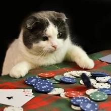
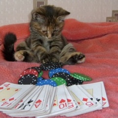
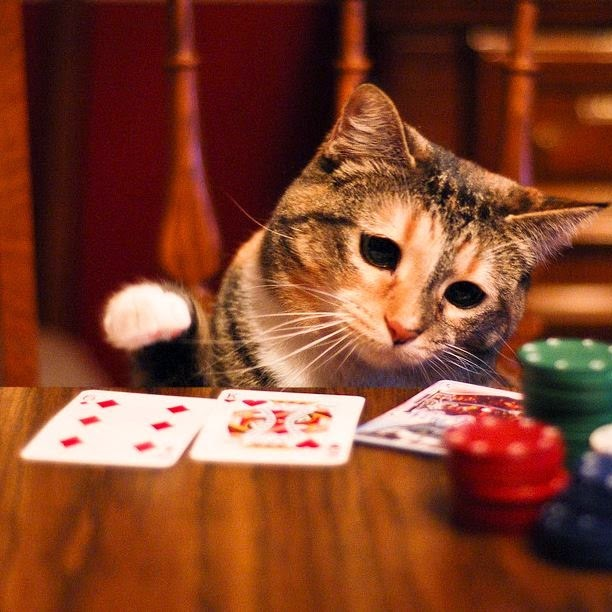
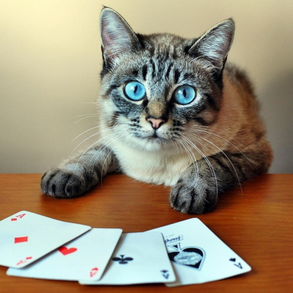

| Constantly chasing the win | |
|---|---|
|  Bogdan |
Posted: 28 March 2023 02:01 am I recently played on the online slots and won $100 from $20. I have put all of that back on again trying to chase more. What is wrong with me 🙁 I literally can't stop myself. |
|  Bladesman |
Posted: 28 March 2023 5:24 am Hi Soreloser, that is the classic sign of a compulsive gambler always thinking you can win more when all you are doing is feeding your addiction. You need to get all the blockers in place you can, sign up with gamstop, put gamban on your phone or whatever you use to gamble, contact oyur bank to put a block on gambling transactions. All these will help when you get the urge but the main this is you have to want to stop. There are no half measures it's got to be all in to beat this before your debt spirals out of control. |
|  gadaveuk |
Posted: 29 March 2023 10:25 pm Hi The gambling was just the symptoms that I was emotionally vulnerable. When I went gambling it was often fear based running away from peoplel ife and situations. Please keep withy our recovery. In time I made much healthier choices. It is very simple just for today will not gamble. Dave L |
|  Joydivider |
Posted: 30 March 2023 08:53 am Hey 👋 Very good advice above, I experienced this recently with chasing wins but I stopped before it took any more this time. "Winning" to me is more dangerous as it keeps me hooked and once the profit goes you're putting your own money in and then problems come in. I found out that you only win if you don't gamble at all! Blocks in place and seeking support is the only way forward. Have a good day. |
FORUM
On this page you participate in a discussion amongst other people who share their own struggles with gambling addiction and their success stories